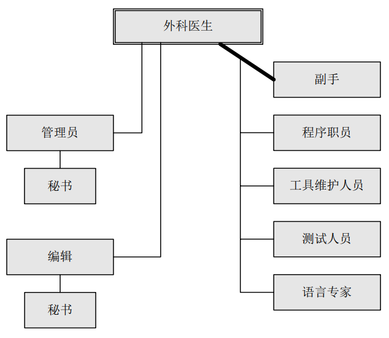

1 焦油坑
编程为什么有趣？
- 一种创建事物的纯粹快乐。如同小孩在玩泥巴时感到愉快一样，成年人喜欢创建事物， 特别是自己进行设计。
- 快乐来自于开发对其他人有用的东西。内心深处，我们期望其他人使用我们的劳动成果， 并能对他们有所帮助。
- 整个过程体现出魔术般的力量——将相互啮合的零部件组装在一起，看到它们精妙地运行， 得到预先所希望的结果。
- 学习的乐趣，来自于这项工作的非重复特性。
- 程序员凭空地运用自己的想象， 来建造自己的“城堡”，创造的方式如此得灵活， 如此得易于精炼和重建， 如此得容易实现概念上的设想
职业的苦恼
- 必须追求完美，以得到期望的结果
- 由他人来设定目标，供给资源，提供信息。编程人员很少能控制工作环境和工作目标
- 概念性设计是有趣的，但寻找琐碎的 bug 却只是一项重复性的活动
- 当投入了大量辛苦的劳动，产品在即将完成或者终于完成的时候， 却已显得陈旧过时
2 人月神话
2.1 乐观主义
所有的编程人员都是乐观主义者：无论是什么样的程序， 他们都认为结果是勿庸置疑的：“这次它肯定会运行。” 或者“我刚刚找出了最后一个错误。” 所以系统编程的进度安排背后的第一个假设是： 一切都将运作良好， 每一项任务仅花费它所“应该”花费的时间。正由于介质（思维活动）的易于驾驭， 我们期待在实现过程中不会碰到困难， 因此造成了乐观主义的弥漫。 而我们的构思是有缺陷的， 因此总会有bug。也就是说，我们的乐观主义并不应该是理所应当的。
2.2 人月
我认为用人月作为衡量一项工作的规模是一个危险和带有欺骗性的神话。 它暗示着人员数量和时间是可以相互替换的。人数和时间的互换仅仅适用于以下情况
- 某个任务可以分解给参与人员，并且他们之间不需要相互的交流。
沟通所增加的负担由两个部分组成：培训和相互的交流。
- 每个成员需要进行技术、 项目目标以及总体策略上的培训。 这种培训不能分解，因此这部分增加的工作量随人员的数量呈线性增长。
- 相互之间交流的情况更糟一些。如果任务的每个部分必须分别和其他部分单独协作，则工作量按照 n(n-1)/2递增
所以在很多时候，增加更多的人手，实际上是延长了，而不是缩短了时间进度。向进度落后的项目中增加人手，只会使进度更加落后。
2.3 系统测试
对于软件任务的进度安排，以下是我使用了很多年的经验法则：
- 1/3 计划
- 1/6 编码
- 1/4 构件测试和早期系统测试
- 1/4 系统测试，所有的构件已完成
2.4 空泛的估算
为了满足顾客期望的日期而造成的不合理进度安排， 在软件领域中却比其他的任何工程领域要普遍得多。而且，非阶段化方法的采用， 少得可怜的数据支持， 加上完全借助软件经理的直觉，这样的方式很难生产出健壮可靠和规避风险的估计。
- 开发并推行生产率图表、缺陷率、估算规则等等，而整个组织最终会从这些数据的共享上获益。
- 在基于可靠基础的估算出现之前，项目经理需要挺直腰杆，坚持他们的估计，确信自己的经验和直觉总比从期望派生出的结果要强得多。
3 外科手术队伍
如果一个 200 人的项目中， 有 25 个最能干和最有开发经验的项目经理，那么开除剩下的 175 名程序员，让项目经理来编程开发。 Mills建议大型项目的每一个部分由一个团队解决，但是该队伍以类似外科手术的方式组建，而并非一拥而上。同每个成员截取问题某个部分的做法相反， 由一个人来进行问题的分解， 其他人给予他所需要的支持，以提高效率和生产力。
- 外科医生。 Mills称之为首席程序员。他亲自定义功能和性能技术说明书，设计程序，编制源代码，测试以及书写技术文档。
- 副手。他是外科医生的后备，能完成任何一部分工作，但是相对具有较少的经验。他的主要作用是作为设计的思考者、讨论者和评估人员。
- 管理员。需要一个控制财务、人员、工作地点安排和机器的专业管理人员，该管理员充当与组织中其他管理机构的接口。不需要全职，一个管理员可以为两个团队服务。
- 编辑。编辑根据外科医生的草稿或者口述的手稿，进行分析和重新组织，提供各种参考信息和书目，对多个版本进行维护以及监督文档生成的机制。
- 两个秘书。 管理员和编辑每个人需要一个秘书。管理员的秘书负责项目的协作一致和非产品文件。
- 程序职员。 他负责维护编程产品库中所有团队的技术记录。该职员接受秘书性质的培训，承担机器码文件和可读文件的相关管理责任。
- 测试人员。 测试人员既是为各个功能设计系统测试用例，同时也是为日常调试设计测试数据。他还负责计划测试的步骤和为测试搭建测试平台。
- 语言专家。语言专家则寻找一种简洁、 有效的使用语言的方法来解决复杂、晦涩或者棘手的问题。他通常需要对技术进行一些研究（两到三天）。通常一个语言专家可以为两个到三个外科医生服务。

4 概念完整性
我主张在系统设计中，概念完整性应该是最重要的考虑因素。也就是说为了反映一系列连贯的设计思路，宁可省略一些不规则的特性和改进，也不提倡独立和无法整合的系统，哪怕它们其实包含着许多很好的设计。由于目标是易用性，功能与理解上复杂程度的比值才是系统设计的最终测试标准。 单是功能本身或者易于使用都无法成为一个好的设计评判标准。 概念的完整性要求设计必须由一个人，或者非常少数互有默契的人员来实现。而进度压力却要求很多人员来开发系统。有两种方法可以解决这种矛盾：
- 仔细地区分设计方法和具体实现
- 外科手术队伍这样一种崭新的组建编程开发团队的方法。
将设计方法、体系结构方面的工作与具体实现相分离是获得概念完整性的强有力方法。
5 贯彻执行
一句古老的格言警告说： “决不要携带两个时钟出海，带一个或三个。”同样的原则也适用于形式化和记叙性定义。 如果同时具有两种方式， 则必须以一种作为标准， 另一种作为辅助描述， 并照此明确地进行划分。它们都可以作为表达的标准。 显然，对于存有疑问的实现人员，应鼓励他们打电话询问相应的结构师，而不是一边自行猜测一边工作， 这是一项很基本的措施。
6 为什么巴比伦塔会失败
团队如何进行相互之间的交流沟通：
- 非正式途径：清晰定义小组内部的相互关系和充分利用电话，能鼓励大量的电话沟通，从而达到对所书写文档的共同理解。
- 会议：会议中， 团队一个接一个地进行简要的技术陈述。 这种方式非常有用，能澄清成百上千的细小误解
- 工作手册：在项目的开始阶段，应该准备正式的项目工作手册（即feature binder）
团队组织的目的是减少不必要交流和合作的数量， 因此良好的团队组织是解决上述交流问题的关键措施。减少交流的方法是人力划分（division of labor）和限定职责范围（specializationof function）。交流和交流的结果——组织， 是成功的关键。 交流和组织的技能需要管理者仔细考虑， 相关经验的积累和能力的提高同软件技术本身一样重要。
7 削足适履
7.1 规模控制
应该从整体上来进行评价。 没有人可以在自始至终提倡更紧密的软硬件设计集成的同时， 又仅仅就规模本身对软件系统提出批评。规模是软件系统产品用户成本中如此大的一个组成部分，开发人员必须设置规模的目标， 控制规模， 考虑减小规模的方法， 就像硬件开发人员会设立元器件数量目标， 控制元器件的数量， 想出一些减少零件的方法。 同任何开销一样， 规模本身不是坏事， 但不必要的规模是不可取的。
对项目经理而言，规模控制既是技术工作的一部分，也是管理工作的一部分。在整个实现的过程期间， 系统结构师必须保持持续的警觉， 确保连贯的系统完整性。 在这种监督机制之外， 是实现人员自身的态度问题。 培养开发人员从系统整体出发、 面向用户的态度是软件编程管理人员最重要的职能。
7.2 空间技能
项目经理可以做两件事来帮助他的团队取得良好的空间－时间折衷。
- 一是确保他们在编程技能上得到培训， 而不仅仅是依赖他们自己掌握的知识和先前的经验。 特别是使用新语言或者新机器时， 培训显得尤其重要
- 另外一种方法是认识到编程需要技术积累，需要开发很多公共单元构件。每个项目要有能用于队列、搜索和排序的例程或者宏库。对于每项功能，库至少应该有两个程序实现：运行速度较快和短小精炼的。
8 为什么需要正式文档
- 书面记录决策是必要的。只有记录下来，分歧才会明朗，矛盾才会突出。
- 文档能够作为同其他人的沟通渠道。项目经理常常会不断发现，许多理应被普遍认同的策略， 完全不为团队的一些成员所知。文档能极大地减轻负担。
- 项目经理的文档可以作为数据基础和检查列表。通过周期性的回顾，他能清楚项目所处的状态，以及哪些需要重点进行更改和调整。
项目经理的任务是制订计划，并根据计划实现。但是只有书面计划是精确和可以沟通的。 计划中包括了时间、 地点、 人物、 做什么、 资金。 这些少量的关键文档封装了一些项目经理的工作。 如果一开始就认识到它们的普遍性和重要性， 那么就可以将文档作为工具友好地利用起来， 而不会让它成为令人厌烦的繁重任务。 通过遵循文档开展工作， 项目经理能更清晰和快速地设定自己的方向。
9 未雨绸缪
9.1 唯一不变的就是变化本身
第一步是接受这样的事实： 变化是与生俱来的， 不是不合时宜和令人生厌的异常情况。
不但目标上的变化不可避免， 而且设计策略和技术上的变化也不可避免。 抛弃原型概念本身就是对事实的接受——随着学习的过程更改设计。